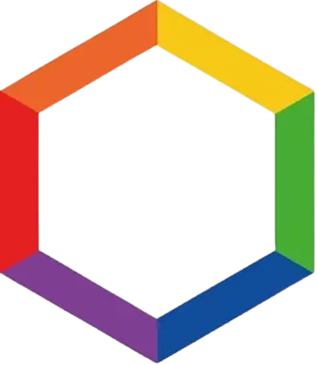

Une modélisation systémique des activités humaines au service des Valeurs de la République et de l'émergence de la Cité des Sciences et des Arts.
Issu des Ateliers d'Expression Citoyenne, le Programme KANT constitue un outil structurel d'observation, de compréhension et de déploiement public. Il conceptualise la transition vers un modèle démognostique.
Ce système postule que la justice politique naît lorsque la connaissance et la compréhension éclairée des mécanismes sociaux, économiques et humains cessent d'être le privilège d'une élite pour devenir une condition commune et transparente, partagée sans rupture cognitive entre le peuple et les instances dirigeantes.
Directive Principielle
"Trouver une forme d'association qui défende et protège de toute la force commune la personne et les biens de chaque associé..."
— Jean-Jacques Rousseau, 1762
L'Atelier désigne le cadre spatio-temporel d'exercice de toute activité humaine. Explorez ci-dessous les six valeurs-principes synchroniques qui structurent cet équilibre.
Sélectionnez un segment de la matrice hexagonale
Espaces d'apprentissage de l'essence de la démocratie sur les territoires.
Dispositif de 2h au sein de structures d'accueil variées (MJC, Lycées, Collectivités). Permet la confrontation bienveillante et l'élaboration de choix collectifs ascendants.
Modules de 1h30 à 2h dispensés en collèges et structures de loisirs. Axés sur la structuration de la pensée individuelle et le respect de la singularité d'autrui.
Séances de 1h au sein des écoles primaires. Première initiation pratique aux logiques de recherche collective de l'intérêt général.